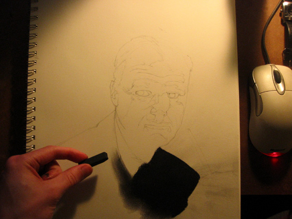
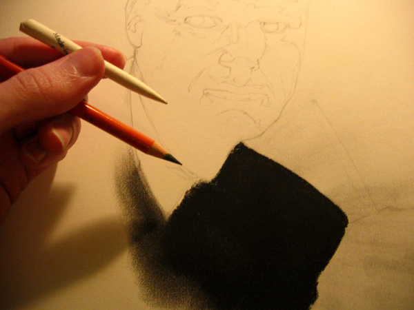
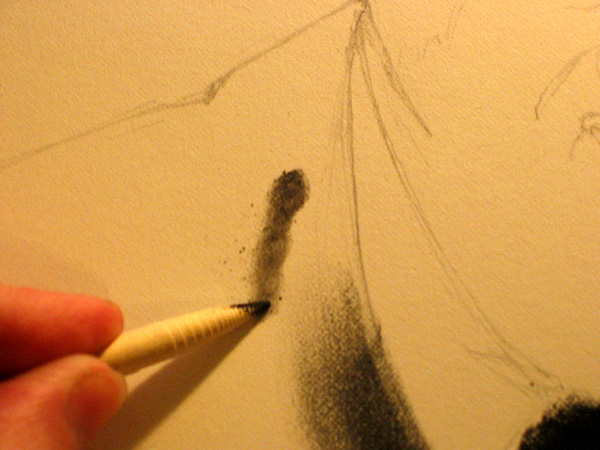
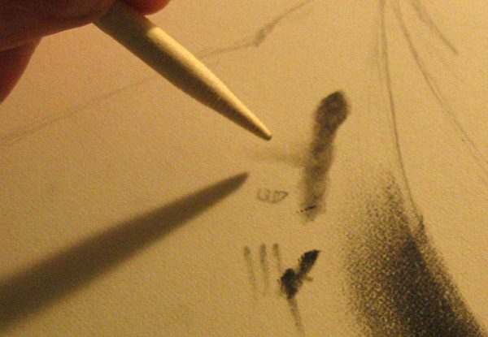
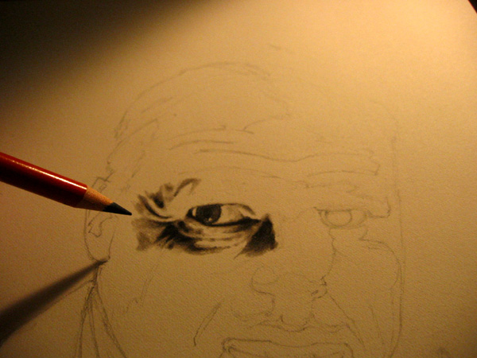
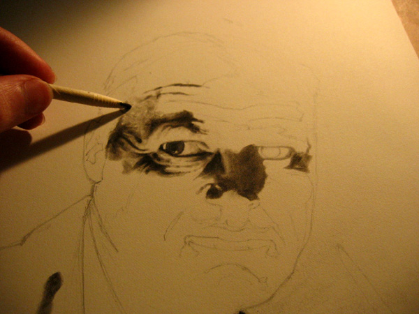
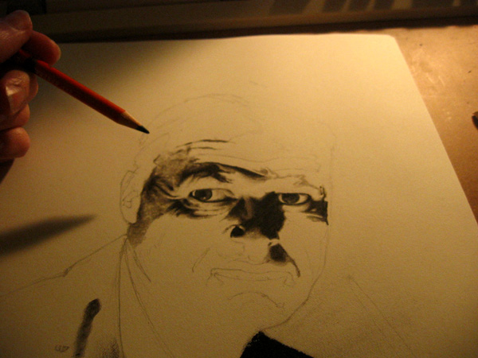
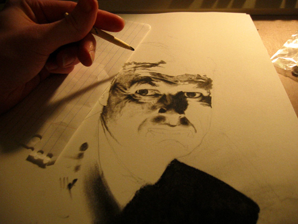
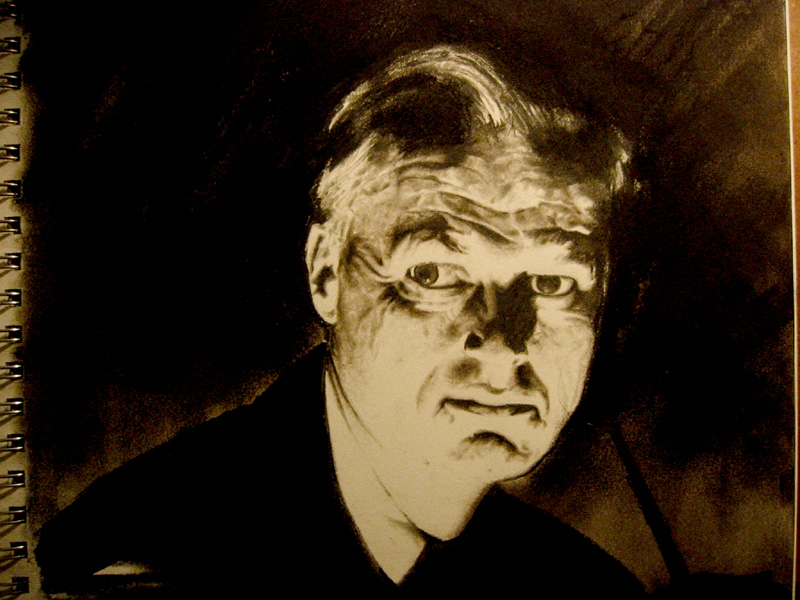

|
Charcoal Rendering Tutorial
Here is some insight into my world of charcoal rendering. Below is the reference photo, a good study for light and shadow. I will discuss how I draw it, step by step.

Quite predictably, I start with a simple line drawing. I make sure to keep the penciling very light though, so it does not interfere with the delicate charcoal work to be put down. Usually, I make it even lighter than this, but have darkened it for your benefit. You can always lighten it with a kneaded eraser, which by dabbing and rolling on the surface, will remove excess graphite (I generally don't bother with that). It looks a little odd, because I have outlined every single area of shadow. This is to be a road map for filling in the important shades and gradients.

Next, I take my stick of compressed charcoal, and pick any pitch-black area, and just fill it in. This serves 2 purposes: to color an area that needs it, but maybe more importantly, gives me a nice patch of dark charcoal to use like a painter would use a palette. More on that later. Compressed charcoal is the stuff that gives you such nice darks. You may be saying "I have all this vine charcoal. What should I do with it?" Take it and flush it down the toilet. There is no use for it here. Not with these methods, at least. It is just far too malleable, and does not carry any weight.

For most of the drawing, these are really the only things you'll need. Compressed charcoal pencil and some tortillions. I personally like the small ones, but that's just me.

Now, like I was getting at earlier, swoosh the thing around on the patch of charcoal, picking some up. Like getting paint on a brush. This is what you'll be "coloring" with.

See? Just smudge it onto the page, and it comes off nicely. This gives you an incredible amount of control over tone. You can try a variety of stroke-types too. I generally just do lots of little swirls.

To get even finer tones, take a completely clean tortillion, and work with the charcoal you just put down. Blend it into the white, for some very light tones.

And of course you'll need an eraser. If you don't have one of these clickable erasers, you must follow my instructions very carefully. Take your right hand, and extend it away from your body. Now briskly slap it across your face. Get one of these! They're cool. They last a long time, and you can sharpen them, or cut with an exacto to get a nice sharp edge. Now, a lot of people complain that you cant erase compressed charcoal. Well, you can if you apply it the way I've just shown. Comes off real nice. And you can cut nice marks into your shades, like very thin lines of white for individual hairs reflecting light, etc.

I should note that it is convenient to keep three different torti's on hand, one dark, one medium, and one almost new. After use, the dark one becomes worn out, the medium one becomes dark, and the light one becomes medium. You grab another off the pile for a new light one. It is the cycle of life.

Ok, I begin applying this to the features, filling in my line work, but more importantly, still observing the reference like hell, to make sure I get the tones right.

Another conventional problem with compressed has been that it is tough to do very light, subtle work. If you do it this way, the problem is just the opposite. Fine detailed light work is easy, but keeping things dark enough can be a problem. Because as you keep working the surface, the more charcoal gets spread around and diluted, and the lighter it gets. So now and then, you'll have to go around and darken up the darkest darks. That is, in part, what the pencil is for. (obviously it's also for really fine dark lines, like eyelashes, etc.)

Keep applying more tone, making sure the RELATIVE tones are correct. Your grays should look right in relation to others you've put down already, and not necessarily relative to the white of the page. (the white is left there for only the most shocking lights).

Continue darkening.

I find myself working on the right side details, and as I am left handed, need a paper to keep from smudging. You'll note that in the beginning I filled a big black area on the RIGHT side, for this very reason. Also, the oil from your hands and fingers can have a seriously detrimental effect on your ability to later control the tones on those areas. Just try to remember that if you are ever inclined to smudge with fingers (which I never do, for this type of work at least).

Keep chugging away at the face...

Mostly done the face here. There is really not much more to do. A lot of it is trivial, like filling in the pitch blacks on the suit and the background (which can be very dangerous to all the work you've just done. Caution is advised.)

Here is the finished product. I simply filled in the background with some rough dark patches. A slightly less formal tone than was used with the features, I think makes for a nice playful composition. And note, like I said earlier, doing this is very dangerous, rubbing all that soot so close to your precious delicate rendering. I just hope you have the sense God gave geese to blow the excess dust AWAY from your drawing.

And here is a blowup of the detail.

And here's one more that I thought was cool. It was the first shot I took, where I left the flash on accidentally. It highlights the difference between the two charcoal instruments I used, both the pencil, and the bare stick. Now, both are forms of compressed charcoal. But the pencil uses a harder kind, so it forms a better firm point. Thus it is reflective and has reflected the flash back at us, both for an interesting effect, and to educate you on the difference in quality. It gave me a very cool idea, that you could utilize the different types of charcoal to achieve pitch black effects from most angles, but when the light hits it right, shows us hidden textures, or other picture elements.

|